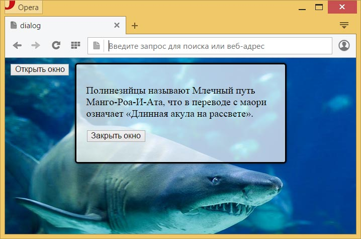

Элемент <dialog>
| Internet Explorer | Chrome | Opera | Safari | Firefox |
| 37 | 24 |
| Android | Firefox Mobile | Opera Mobile | Safari Mobile |
| 30 |
Представляет собой диалоговое окно, в котором можно выводить сообщение или форму, например, для входа на сайт.
Диалоговое окно отображается со следующим предустановленным стилем.
position: absolute;
left: 0;
right: 0;
margin: auto;
border: solid;
padding: 1em;
background: white;
color: black;Таким образом диалоговое окно отображается с белым фоном, чёрной рамкой и по центру горизонтальной оси. Ширина совпадает с шириной родительского контейнера.
Для отображения и сокрытия диалогового окна применяются, соответственно, методы show() и hide(), как показано в примере ниже. Кроме того, диалог можно превратить в модальное окно, используя вместо show() метод showModal(). В этом случае остальные элементы на странице блокируются — текст нельзя выделить, а кнопки нажать до тех пор, пока диалоговое окно не будет закрыто. Также модальное окно можно закрыть клавишей Esc.Синтаксис
<dialog open>
...
</dialog>Закрывающий тег
Аттрибуты
- open
- Отображает диалоговое окно. Без этого атрибута в стилях к нему добавляется display: none и окно не выводится в браузере.
Для этого элемента также доступны универсальные атрибуты и события.
Пример
<!DOCTYPE html>
<html>
<head>
<meta charset="utf-8">
<title>dialog</title>
<style>
body {
background: url(/example/image/shark.jpg) no-repeat;
background-size: cover;
}
dialog {
background: rgba(255, 255, 255, 0.7);
width: 300px;
box-shadow: 0 0 5px rgba(0, 0, 0, 0.5);
border-radius: 5px;
}
</style>
</head>
<body>
<button id="openDialog">Открыть окно</button>
<dialog>
<p>Полинезийцы называют Млечный путь Манго-Роа-И-Ата,
что в переводе с маори означает «Длинная акула на рассвете».</p>
<p><button id="closeDialog">Закрыть окно</button></p>
</dialog>
<script>
var dialog = document.querySelector('dialog');
document.querySelector('#openDialog').onclick = function() {
dialog.show(); // Показываем диалоговое окно
}
document.querySelector('#closeDialog').onclick = function() {
dialog.close(); // Прячем диалоговое окно
}
</script>
</body>
</html>Результат данного примера показан на рис. 1. При нажатии на кнопку «Открыть окно» отображается содержимое элемента <dialog>, до этого невидимое. При нажатии на кнопку «Закрыть окно» диалоговое окно скрывается.

Рис. 1. Вид диалогового окна
Спецификация ?
| Спецификация | Статус |
|---|---|
| WHATWG HTML Living Standard | Живой стандарт |
| HTML5.1 | Рабочий проект |
Спецификация
Каждая спецификация проходит несколько стадий одобрения.
- Recommendation (Рекомендация) — спецификация одобрена W3C и рекомендована как стандарт.
- Candidate Recommendation (Возможная рекомендация) — группа, отвечающая за стандарт, удовлетворена, как он соответствует своим целям, но требуется помощь сообщества разработчиков по реализации стандарта.
- Proposed Recommendation (Предлагаемая рекомендация) — на этом этапе документ представлен на рассмотрение Консультативного совета W3C для окончательного утверждения.
- Working Draft (Рабочий проект) — более зрелая версия черновика после обсуждения и внесения поправок для рассмотрения сообществом.
- Editorʼs draft (Редакторский черновик) — черновая версия стандарта после внесения правок редакторами проекта.
- Draft (Черновик спецификации) — первая черновая версия стандарта.
Особняком стоит живой стандарт HTML (Living) — он не придерживается традиционной нумерации версий, поскольку находится в постоянной разработке и обновляется регулярно.